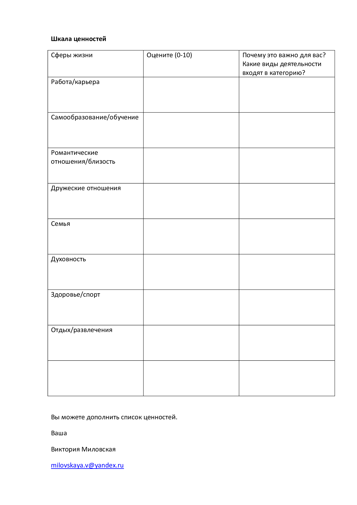

Ценность и цель
Цель — то, чего можно достичь. Ценность — направление, в котором вы хотите двигаться. Например, закончить курс — цель, а продолжать учиться и узнавать новое — ценность. Цели можно менять, сохраняя важное для себя направление.
Прислушаться к себе
Подумайте об отношениях, работе, заботе о себе, творчестве или участии в жизни других людей. В какой области вам хочется больше присутствовать? Что вы выбирали бы, если бы на время отложили ожидания окружающих? Здесь нет правильного списка ценностей.
Три вопроса для заметок
Что для меня важно в этой области жизни? Как это могло бы проявляться в моих действиях? Какой небольшой шаг доступен мне на этой неделе? Ответы можно записать для себя или принести на встречу.
Достаточно небольшого шага
Если важна близость, шагом может стать внимательный разговор. Если важна забота о себе — время для отдыха. Когда приоритеты сталкиваются, полезно обсудить, как учитывать разные потребности без требования делать всё идеально.
Иллюстрации и материалы
Нажмите на изображение, чтобы рассмотреть его целиком. Текстовые материалы представлены на русском языке.
{kind=link}

Хотите обсудить свою ситуацию?
Напишите Виктории, чтобы задать вопрос или согласовать первую встречу.
Связаться с Викторией →